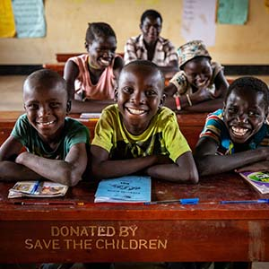

"A good Education is the inalienable right of every child" A huge chunk of India's potential goes waste because the parents of children from poor families, despite knowing (or even not knowing) the value of education, cannot afford it for their children. Only a handful of well -organized private schools offer world-class education in India, and a very small percentage of our population, the extremely wealthy, can access the same. The budding of thousands of talented children from such poor families gets limited only because of financial constraints. The realization that these children need a new school where they can educate themselves to compete with world-class education without spending a penny was the dream which finally framed 'The Sparks Foundation NGO.'
'The Sparks Foundation NGO' believes that children should not bury their noses in books only. They should parallely engage with innovation, imagination and creativity. 'Sparks NGO' also believes that the children need to root themselves in the rich values and traditions that define our country. The Ngo is dedicated towards the complete development of the underprivileged children who have immense potential but are deprived of opportunities and amenities. The Ngo has taken the oath to make them aware about the need to build & prepare themselves first before they can contribute to others. These children would be the gift to society – we do not doubt for a moment that these active dreamers and doers, movers and shakers would surely change the face of society!
VISION
"A good Education is the inalienable right of every child" A huge chunk of India's potential goes waste because the parents of children from poor families, despite knowing (or even not knowing) the value of education, cannot afford it for their children. Only a handful of well -organized private schools offer world-class education in India, and a very small percentage of our population, the extremely wealthy, can access the same. The budding of thousands of talented children from such poor families gets limited only because of financial constraints. The realization that these children need a new school where they can educate themselves to compete with world-class education without spending a penny was the dream which finally framed 'The Sparks Foundation NGO.'
'The Sparks Foundation NGO' believes that children should not bury their noses in books only. They should parallely engage with innovation, imagination and creativity. 'Sparks NGO' also believes that the children need to root themselves in the rich values and traditions that define our country. The Ngo is dedicated towards the complete development of the underprivileged children who have immense potential but are deprived of opportunities and amenities. The Ngo has taken the oath to make them aware about the need to build & prepare themselves first before they can contribute to others. These children would be the gift to society – we do not doubt for a moment that these active dreamers and doers, movers and shakers would surely change the face of society!